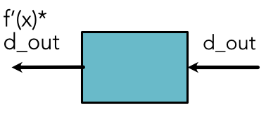

Module 1.3 - Backprop
Module 1.3
Backprop
Functions
Function \(f(x) = x \times 5\)
Implementation
class TimesFive(ScalarFunction): @staticmethod def forward(ctx, x): return x * 5\(x\) is unwrapped (python number) and return is a number
Multi-arg Functions
Code
class Mul(ScalarFunction):
@staticmethod
def forward(ctx, x, y):
return x * y
Context
Arguments to backward must be saved in context.
class Square(ScalarFunction):
@staticmethod
def forward(ctx, x):
ctx.save_for_backward(x)
return x * x
@staticmethod
def backward(ctx, d_out):
x = ctx.saved_values
f_prime = 2 * x
return f_prime * d_outPicture

Lecture Quiz
Quiz
Outline
Variables and Functions
Backward
Chain Rule
How do we get derivatives?
Base case: compute derivatives for single functions
Inductive case: define how to propagate a derivative
Chain Rule
Python Details
Use apply for the above Functions
x = minitorch.Scalar(10.) z = TimesFive.apply(x) out = TimesFive.apply(z)Apply unwraps, calls, and wraps again
Chaining Boxes
Chaining
x = minitorch.Scalar(10., name="x")
g_x = G.apply(x)
f_g_x = F.apply(g_x)
Chain Rule
Compute derivative from chain

Chain Rule
Example: Chain Rule
Chaining
Example: Chain Rule
What is the combination?
Two Arguments: Chain
Two Arguments: Chain

Two Arguments: Chain
Example: Chain Rule
Chaining
Example: Chain Rule
What is the combination?
Multivariable Chain
Multivariable Chain
Coding Derivatives
For each \(f\) or \(g\) we need to also provide \(f'\) and \(g'\)
This part can be done through local symbolic or numeric differentiation
Picture
Backpropagation
Goal
Efficient implementation of chain-rule
Assume access to the graph.
Goal: Call backward once per variable / d_out
Full Graph

Tool
If we have:
the derivative with respect to a Variable
the Function that created the Variable
We can apply the chain rule through that function.
Step


Issue
Order matters!
If we proceed without finishing a variable, we may need to apply chain rule multiple times
Desired property: all derivatives for a variable before backward.
Ordering Step
Do not process any Variable until all downstream Variables are done.
Collect a list of the Variables first.
Topological Sorting
High-level -> Run depth first search and mark nodes.
Topological Sorting
Pseudocode
visit(last)
function visit(node n)
if n has a mark then return
for each node m with an edge from n to m do
visit(m)
mark n with a permanent mark
add n to listBackpropagation
Graph propagation
Ensure flow to original Variables.
Terminology
Leaf: Variable created from scratch
Non-Leaf: Variable created with a Function
Constant: Term passed in that is not a variable
Algorithm: Outer Loop
Call topological sort
Create dict of Variables and derivatives
For each node in backward order:
Algorithm: Inner Loop
if Variable is leaf, add its final derivative
if the Variable is not a leaf,
call backward with \(d_{out}\)
loop through all the Variables+derivative
accumulate derivatives for the Variable
Example
Example

Example
Example
Example

Example

Example

Neural Networks
Neural Networks
New model
Uses repeated linear splits of data
Produces non-linear separators
Loss will not change
Training
model = Network()
...
model.named_parameters()All the parameters in model are leaf Variables
Computing backward on loss fills their derivative
Math View
- Parameters:
\(w_1, w_2, w^0_1, w^0_2, w^1_1, w^1_2, b, b^0, b^1\)
Math View (Alt)
- Parameters:
\(w_1, w_2, w^0_1, w^0_2, w^1_1, w^1_2, b, b^0, b^1\)
Code
Code in run_scalar.py
Code
Optim to move the parameters.